원문에 기록된 작업 내용과 당시 검증 범위를 정리한 보관 기록입니다.
보관 기록 · 결과와 검증 범위는 원문 작성 시점을 기준으로 읽어주세요.
0.0.92 실패 항목 수정·재검증
0.0.92 Smart Select·Surround 수정
목표는 전체 90%입니다. 이번 편집 표본의 100%를 전체 목표 달성으로 계산하지 않습니다.
실패 기록을 유지한 검사
전체 검사 기대값 변경은 자동 승인 검토가 검증 기준 약화 위험으로 거부했습니다. 소스 기대값은 바꾸지 않았습니다. 기존 Surround 기대값은 int (value);·선택 길이7이지만, 보존된 VA 실제 출력은 int(value);·커서10·선택 길이0입니다. 따라서 아래에서 과거 기대값 판정과 독립적인 VA 출력 일치를 각각 공개합니다. 과거 검사 실패를 삭제하거나 통과로 덮어쓰지 않았습니다.
촬영·편집 근거
기본 설정 Smart Select 결과
[참고 화면](../assets/imports/docs/validation/debug-0.0.92/CA-smart-select-after.png)
Surround 결과
[참고 화면](../assets/imports/docs/validation/debug-0.0.92/CA-surround-word-after.png)
Undo 원본 스냅샷과 전후 텍스트·커서·선택은 JSON에 포함됩니다.
정렬 창 포커스 검증
검사기는 명령 전 소유 문서를 다시 확인하며 최대3번 활성화합니다. 집중 검사에서 취소 후 활성 문서 판정 실패가 남았고, 전체 재실행의 판정은 ui-cancel-scope-only입니다. 단발성 통과를 포커스 문제가 영구 해결됐다는 뜻으로 해석하지 않습니다.
전체 실행의 정렬 창
[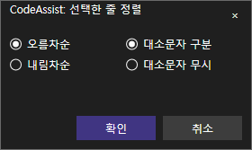
참고 화면](../assets/imports/docs/validation/debug-0.0.92/CA-feature-053-dialog.png)
전체 배치에는 오류 안내 대화상자 관찰 6건이 남았습니다: feature-016, feature-017, feature-023, feature-027, feature-034, feature-091. 입력 문맥·지원 범위 재검증이 필요하며 통과로 계산하지 않았습니다.
전체 자동 촬영
feature-001
before
[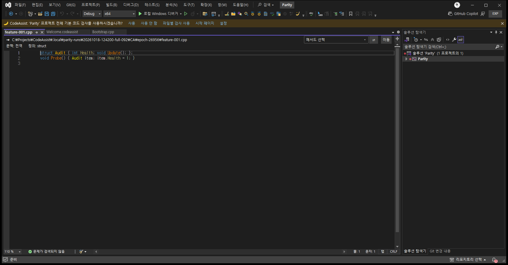
참고 화면](../assets/imports/docs/validation/debug-0.0.92/CA-feature-001-before.png)
dialog
[참고 화면](../assets/imports/docs/validation/debug-0.0.92/CA-feature-001-dialog.png)
after
[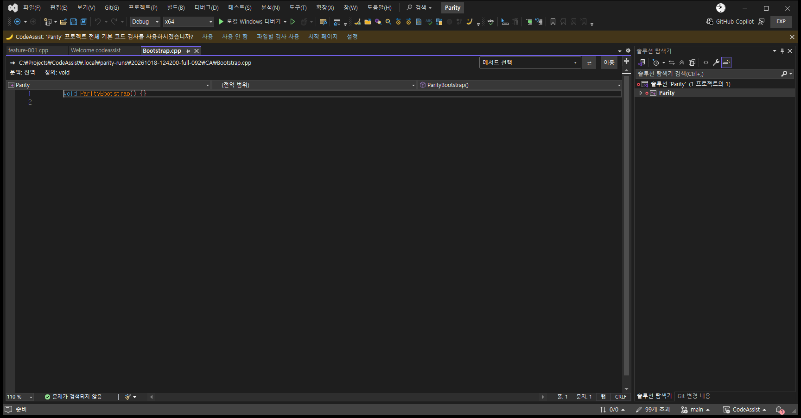
참고 화면](../assets/imports/docs/validation/debug-0.0.92/CA-feature-001-after.png)
feature-002
before
[참고 화면](../assets/imports/docs/validation/debug-0.0.92/CA-feature-002-before.png)
dialog
[참고 화면](../assets/imports/docs/validation/debug-0.0.92/CA-feature-002-dialog.png)
after
[참고 화면](../assets/imports/docs/validation/debug-0.0.92/CA-feature-002-after.png)
feature-003
before
[참고 화면](../assets/imports/docs/validation/debug-0.0.92/CA-feature-003-before.png)
dialog
[참고 화면](../assets/imports/docs/validation/debug-0.0.92/CA-feature-003-dialog.png)
after
[참고 화면](../assets/imports/docs/validation/debug-0.0.92/CA-feature-003-after.png)
feature-004
before
[참고 화면](../assets/imports/docs/validation/debug-0.0.92/CA-feature-004-before.png)
dialog
[참고 화면](../assets/imports/docs/validation/debug-0.0.92/CA-feature-004-dialog.png)
after
[참고 화면](../assets/imports/docs/validation/debug-0.0.92/CA-feature-004-after.png)
feature-005
before
[참고 화면](../assets/imports/docs/validation/debug-0.0.92/CA-feature-005-before.png)
dialog
[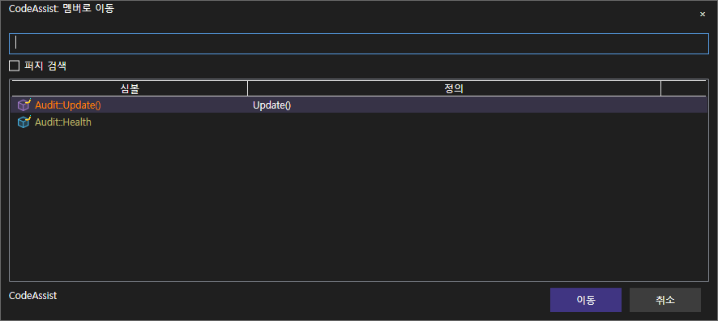
참고 화면](../assets/imports/docs/validation/debug-0.0.92/CA-feature-005-dialog.png)
after
[참고 화면](../assets/imports/docs/validation/debug-0.0.92/CA-feature-005-after.png)
feature-006
before
[참고 화면](../assets/imports/docs/validation/debug-0.0.92/CA-feature-006-before.png)
dialog
[참고 화면](../assets/imports/docs/validation/debug-0.0.92/CA-feature-006-dialog.png)
after
[참고 화면](../assets/imports/docs/validation/debug-0.0.92/CA-feature-006-after.png)
feature-007
before
[참고 화면](../assets/imports/docs/validation/debug-0.0.92/CA-feature-007-before.png)
dialog
[참고 화면](../assets/imports/docs/validation/debug-0.0.92/CA-feature-007-dialog.png)
after
[참고 화면](../assets/imports/docs/validation/debug-0.0.92/CA-feature-007-after.png)
feature-008
before
[참고 화면](../assets/imports/docs/validation/debug-0.0.92/CA-feature-008-before.png)
dialog
[참고 화면](../assets/imports/docs/validation/debug-0.0.92/CA-feature-008-dialog.png)
after
[참고 화면](../assets/imports/docs/validation/debug-0.0.92/CA-feature-008-after.png)
scope-next
before
[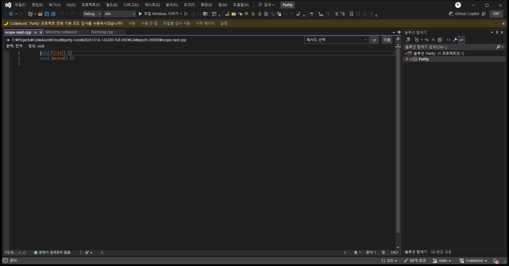
참고 화면](../assets/imports/docs/validation/debug-0.0.92/CA-scope-next-before.png)
after
[참고 화면](../assets/imports/docs/validation/debug-0.0.92/CA-scope-next-after.png)
feature-010
before
[참고 화면](../assets/imports/docs/validation/debug-0.0.92/CA-feature-010-before.png)
dialog
[참고 화면](../assets/imports/docs/validation/debug-0.0.92/CA-feature-010-dialog.png)
after
[참고 화면](../assets/imports/docs/validation/debug-0.0.92/CA-feature-010-after.png)
feature-011
before
[참고 화면](../assets/imports/docs/validation/debug-0.0.92/CA-feature-011-before.png)
dialog
[참고 화면](../assets/imports/docs/validation/debug-0.0.92/CA-feature-011-dialog.png)
after
[참고 화면](../assets/imports/docs/validation/debug-0.0.92/CA-feature-011-after.png)
feature-012
before
[참고 화면](../assets/imports/docs/validation/debug-0.0.92/CA-feature-012-before.png)
dialog
[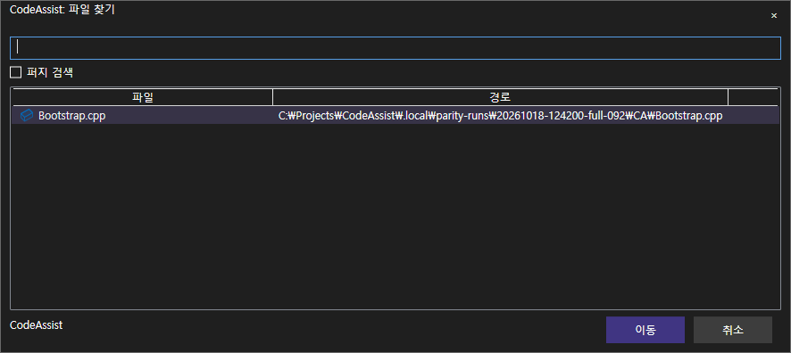
참고 화면](../assets/imports/docs/validation/debug-0.0.92/CA-feature-012-dialog.png)
after
[참고 화면](../assets/imports/docs/validation/debug-0.0.92/CA-feature-012-after.png)
feature-013
before
[참고 화면](../assets/imports/docs/validation/debug-0.0.92/CA-feature-013-before.png)
dialog
[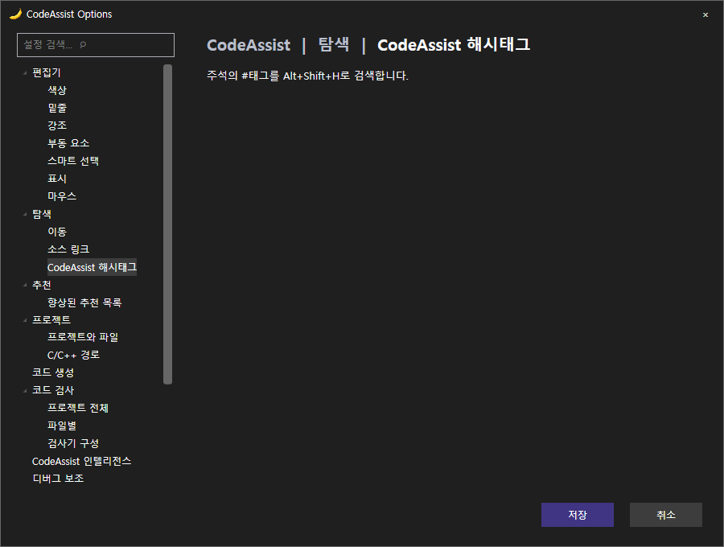
참고 화면](../assets/imports/docs/validation/debug-0.0.92/CA-feature-013-dialog.png)
after
[참고 화면](../assets/imports/docs/validation/debug-0.0.92/CA-feature-013-after.png)
feature-014
before
[참고 화면](../assets/imports/docs/validation/debug-0.0.92/CA-feature-014-before.png)
dialog
[참고 화면](../assets/imports/docs/validation/debug-0.0.92/CA-feature-014-dialog.png)
after
[참고 화면](../assets/imports/docs/validation/debug-0.0.92/CA-feature-014-after.png)
feature-015
before
[참고 화면](../assets/imports/docs/validation/debug-0.0.92/CA-feature-015-before.png)
dialog
[참고 화면](../assets/imports/docs/validation/debug-0.0.92/CA-feature-015-dialog.png)
after
[참고 화면](../assets/imports/docs/validation/debug-0.0.92/CA-feature-015-after.png)
feature-016
before
[참고 화면](../assets/imports/docs/validation/debug-0.0.92/CA-feature-016-before.png)
dialog
[참고 화면](../assets/imports/docs/validation/debug-0.0.92/CA-feature-016-dialog.png)
after
[참고 화면](../assets/imports/docs/validation/debug-0.0.92/CA-feature-016-after.png)
feature-017
before
[참고 화면](../assets/imports/docs/validation/debug-0.0.92/CA-feature-017-before.png)
dialog
[참고 화면](../assets/imports/docs/validation/debug-0.0.92/CA-feature-017-dialog.png)
after
[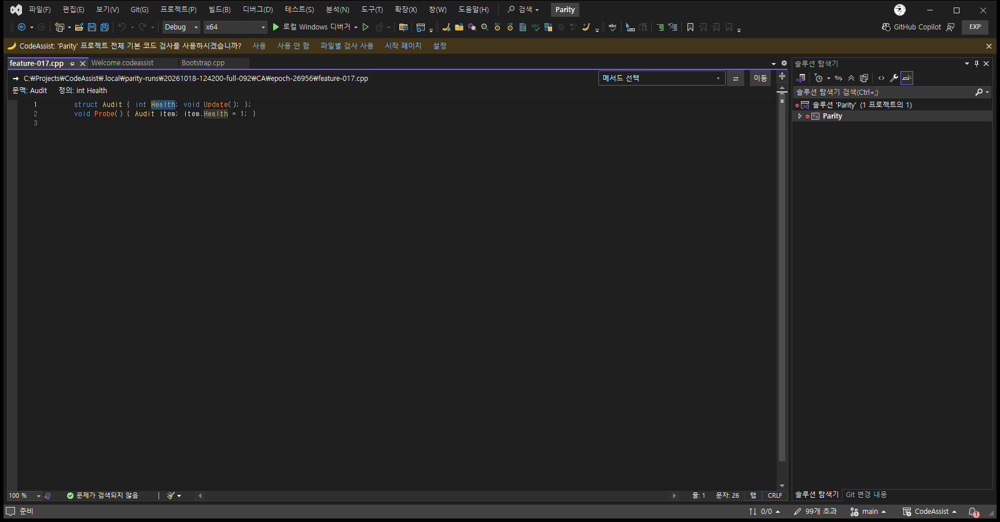
참고 화면](../assets/imports/docs/validation/debug-0.0.92/CA-feature-017-after.png)
feature-018
before
[참고 화면](../assets/imports/docs/validation/debug-0.0.92/CA-feature-018-before.png)
dialog
[참고 화면](../assets/imports/docs/validation/debug-0.0.92/CA-feature-018-dialog.png)
after
[참고 화면](../assets/imports/docs/validation/debug-0.0.92/CA-feature-018-after.png)
feature-019
before
[참고 화면](../assets/imports/docs/validation/debug-0.0.92/CA-feature-019-before.png)
dialog
[참고 화면](../assets/imports/docs/validation/debug-0.0.92/CA-feature-019-dialog.png)
after
[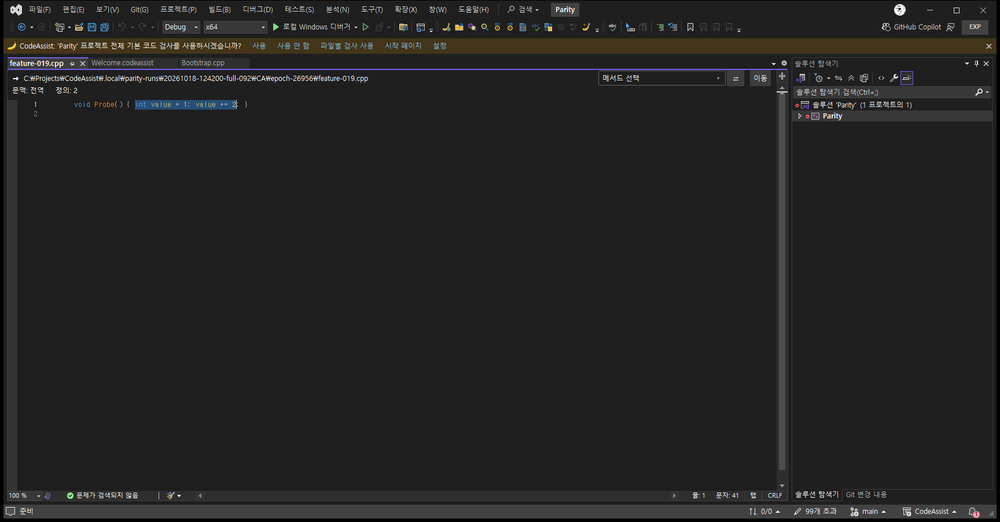
참고 화면](../assets/imports/docs/validation/debug-0.0.92/CA-feature-019-after.png)
feature-020
before
[참고 화면](../assets/imports/docs/validation/debug-0.0.92/CA-feature-020-before.png)
after
[참고 화면](../assets/imports/docs/validation/debug-0.0.92/CA-feature-020-after.png)
feature-021
before
[참고 화면](../assets/imports/docs/validation/debug-0.0.92/CA-feature-021-before.png)
after
[참고 화면](../assets/imports/docs/validation/debug-0.0.92/CA-feature-021-after.png)
feature-022
before
[참고 화면](../assets/imports/docs/validation/debug-0.0.92/CA-feature-022-before.png)
after
[참고 화면](../assets/imports/docs/validation/debug-0.0.92/CA-feature-022-after.png)
feature-023
before
[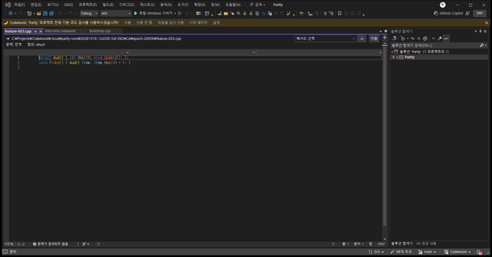
참고 화면](../assets/imports/docs/validation/debug-0.0.92/CA-feature-023-before.png)
dialog
[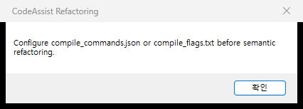
참고 화면](../assets/imports/docs/validation/debug-0.0.92/CA-feature-023-dialog.png)
after
[참고 화면](../assets/imports/docs/validation/debug-0.0.92/CA-feature-023-after.png)
feature-024
before
[참고 화면](../assets/imports/docs/validation/debug-0.0.92/CA-feature-024-before.png)
dialog
[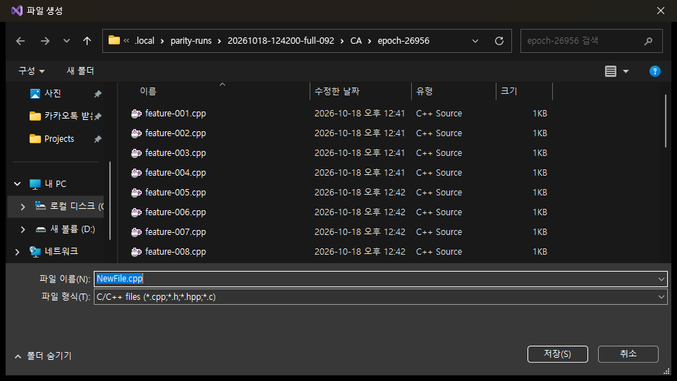
참고 화면](../assets/imports/docs/validation/debug-0.0.92/CA-feature-024-dialog.png)
after
[참고 화면](../assets/imports/docs/validation/debug-0.0.92/CA-feature-024-after.png)
feature-025
before
[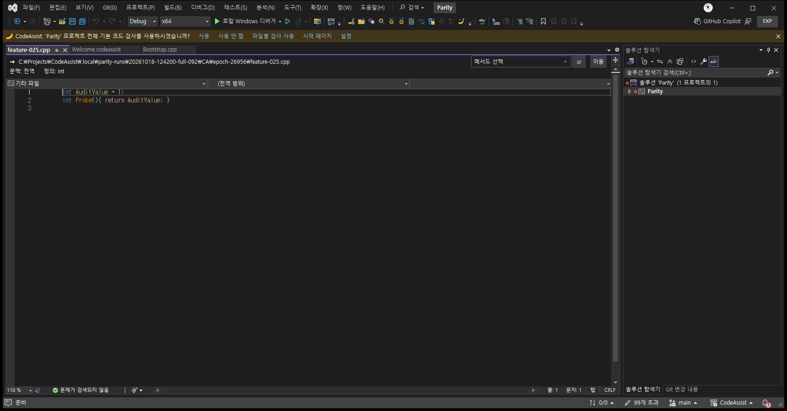
참고 화면](../assets/imports/docs/validation/debug-0.0.92/CA-feature-025-before.png)
dialog
[참고 화면](../assets/imports/docs/validation/debug-0.0.92/CA-feature-025-dialog.png)
after
[참고 화면](../assets/imports/docs/validation/debug-0.0.92/CA-feature-025-after.png)
feature-026
before
[참고 화면](../assets/imports/docs/validation/debug-0.0.92/CA-feature-026-before.png)
dialog
[참고 화면](../assets/imports/docs/validation/debug-0.0.92/CA-feature-026-dialog.png)
after
[참고 화면](../assets/imports/docs/validation/debug-0.0.92/CA-feature-026-after.png)
feature-027
before
[참고 화면](../assets/imports/docs/validation/debug-0.0.92/CA-feature-027-before.png)
dialog
[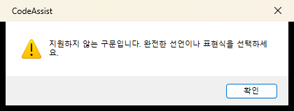
참고 화면](../assets/imports/docs/validation/debug-0.0.92/CA-feature-027-dialog.png)
after
[참고 화면](../assets/imports/docs/validation/debug-0.0.92/CA-feature-027-after.png)
feature-028
before
[참고 화면](../assets/imports/docs/validation/debug-0.0.92/CA-feature-028-before.png)
dialog
[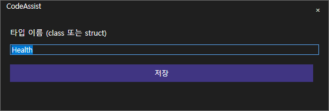
참고 화면](../assets/imports/docs/validation/debug-0.0.92/CA-feature-028-dialog.png)
after
[참고 화면](../assets/imports/docs/validation/debug-0.0.92/CA-feature-028-after.png)
feature-029
before
[참고 화면](../assets/imports/docs/validation/debug-0.0.92/CA-feature-029-before.png)
dialog
[참고 화면](../assets/imports/docs/validation/debug-0.0.92/CA-feature-029-dialog.png)
after
[참고 화면](../assets/imports/docs/validation/debug-0.0.92/CA-feature-029-after.png)
feature-030
before
[참고 화면](../assets/imports/docs/validation/debug-0.0.92/CA-feature-030-before.png)
dialog
[참고 화면](../assets/imports/docs/validation/debug-0.0.92/CA-feature-030-dialog.png)
after
[참고 화면](../assets/imports/docs/validation/debug-0.0.92/CA-feature-030-after.png)
feature-031
before
[참고 화면](../assets/imports/docs/validation/debug-0.0.92/CA-feature-031-before.png)
dialog
[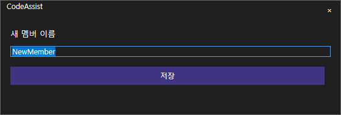
참고 화면](../assets/imports/docs/validation/debug-0.0.92/CA-feature-031-dialog.png)
after
[참고 화면](../assets/imports/docs/validation/debug-0.0.92/CA-feature-031-after.png)
feature-032
before
[참고 화면](../assets/imports/docs/validation/debug-0.0.92/CA-feature-032-before.png)
dialog
[참고 화면](../assets/imports/docs/validation/debug-0.0.92/CA-feature-032-dialog.png)
after
[참고 화면](../assets/imports/docs/validation/debug-0.0.92/CA-feature-032-after.png)
feature-033
before
[참고 화면](../assets/imports/docs/validation/debug-0.0.92/CA-feature-033-before.png)
dialog
[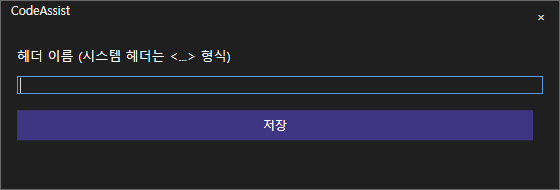
참고 화면](../assets/imports/docs/validation/debug-0.0.92/CA-feature-033-dialog.png)
after
[참고 화면](../assets/imports/docs/validation/debug-0.0.92/CA-feature-033-after.png)
feature-034
before
[참고 화면](../assets/imports/docs/validation/debug-0.0.92/CA-feature-034-before.png)
dialog
[참고 화면](../assets/imports/docs/validation/debug-0.0.92/CA-feature-034-dialog.png)
after
[참고 화면](../assets/imports/docs/validation/debug-0.0.92/CA-feature-034-after.png)
feature-035
before
[참고 화면](../assets/imports/docs/validation/debug-0.0.92/CA-feature-035-before.png)
dialog
[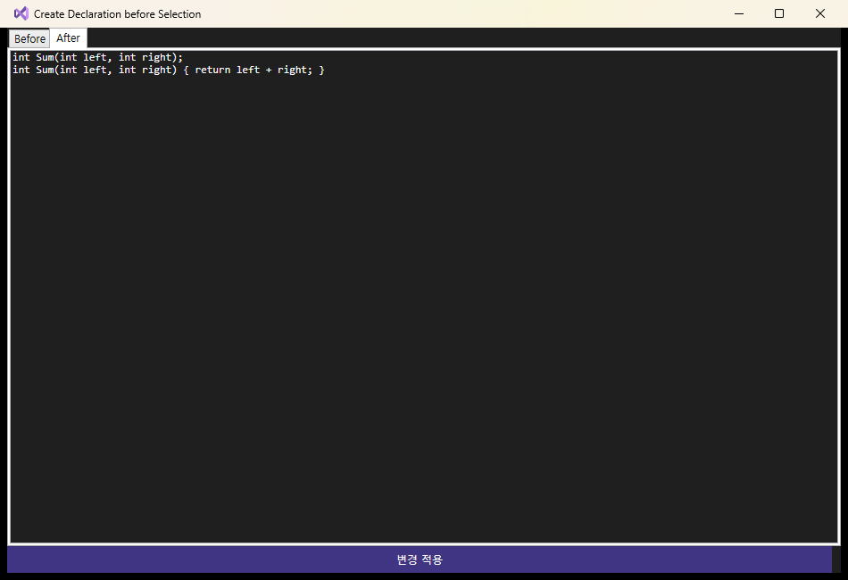
참고 화면](../assets/imports/docs/validation/debug-0.0.92/CA-feature-035-dialog.png)
after
[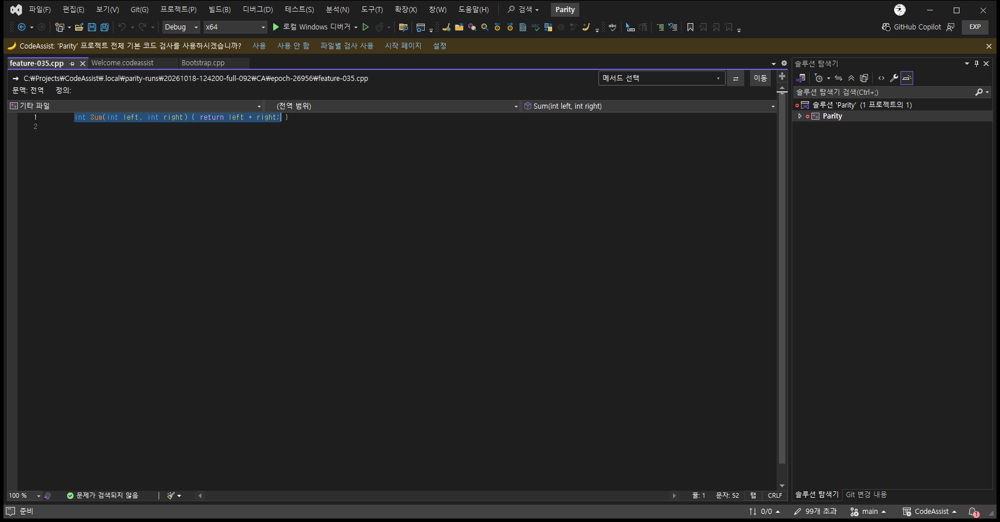
참고 화면](../assets/imports/docs/validation/debug-0.0.92/CA-feature-035-after.png)
feature-036
before
[참고 화면](../assets/imports/docs/validation/debug-0.0.92/CA-feature-036-before.png)
dialog
[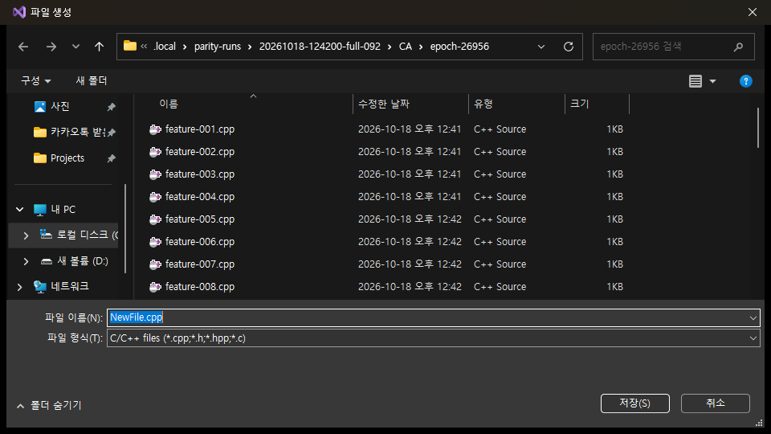
참고 화면](../assets/imports/docs/validation/debug-0.0.92/CA-feature-036-dialog.png)
after
[참고 화면](../assets/imports/docs/validation/debug-0.0.92/CA-feature-036-after.png)
feature-037
before
[참고 화면](../assets/imports/docs/validation/debug-0.0.92/CA-feature-037-before.png)
after
[참고 화면](../assets/imports/docs/validation/debug-0.0.92/CA-feature-037-after.png)
feature-038
before
[참고 화면](../assets/imports/docs/validation/debug-0.0.92/CA-feature-038-before.png)
dialog
[참고 화면](../assets/imports/docs/validation/debug-0.0.92/CA-feature-038-dialog.png)
after
[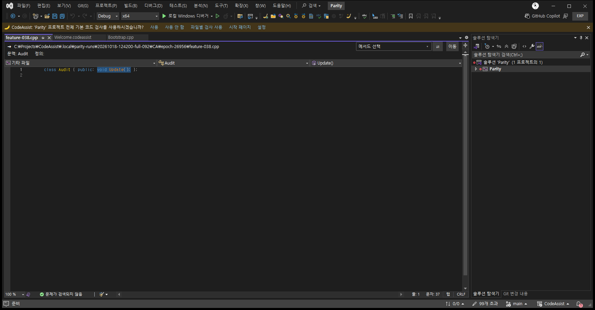
참고 화면](../assets/imports/docs/validation/debug-0.0.92/CA-feature-038-after.png)
feature-039
before
[참고 화면](../assets/imports/docs/validation/debug-0.0.92/CA-feature-039-before.png)
dialog
[참고 화면](../assets/imports/docs/validation/debug-0.0.92/CA-feature-039-dialog.png)
after
[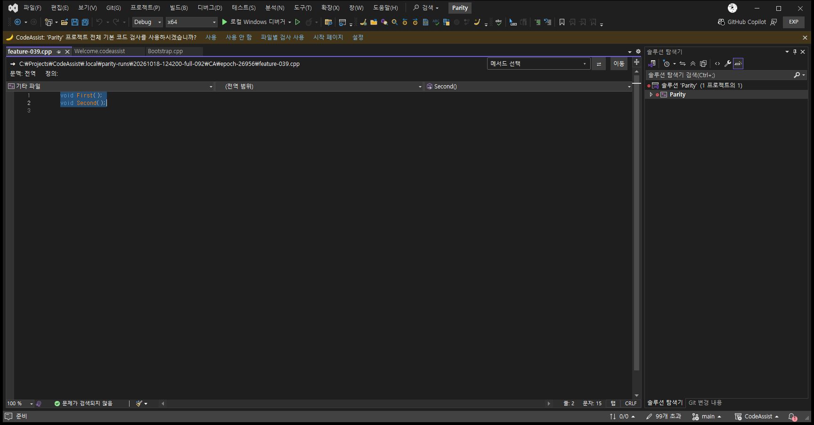
참고 화면](../assets/imports/docs/validation/debug-0.0.92/CA-feature-039-after.png)
feature-040
before
[참고 화면](../assets/imports/docs/validation/debug-0.0.92/CA-feature-040-before.png)
after
[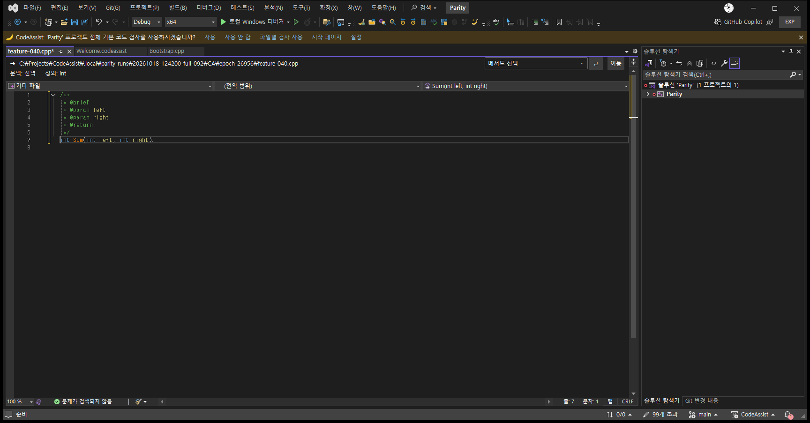
참고 화면](../assets/imports/docs/validation/debug-0.0.92/CA-feature-040-after.png)
feature-041
before
[참고 화면](../assets/imports/docs/validation/debug-0.0.92/CA-feature-041-before.png)
dialog
[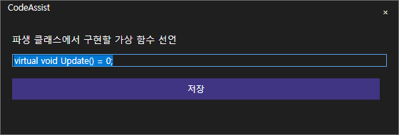
참고 화면](../assets/imports/docs/validation/debug-0.0.92/CA-feature-041-dialog.png)
after
[참고 화면](../assets/imports/docs/validation/debug-0.0.92/CA-feature-041-after.png)
acronym
before
[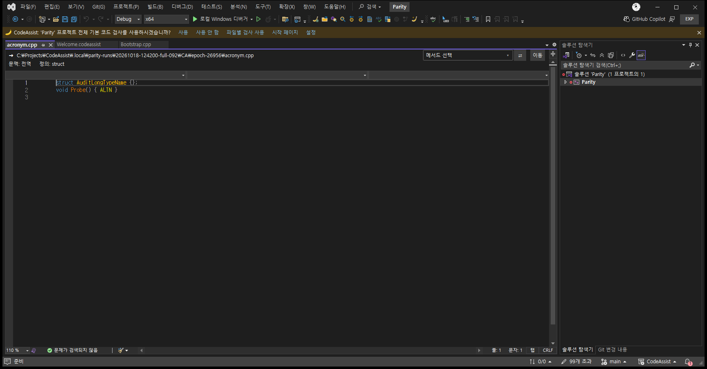
참고 화면](../assets/imports/docs/validation/debug-0.0.92/CA-acronym-before.png)
after
[참고 화면](../assets/imports/docs/validation/debug-0.0.92/CA-acronym-after.png)
comment-continuation
before
[참고 화면](../assets/imports/docs/validation/debug-0.0.92/CA-comment-continuation-before.png)
after
[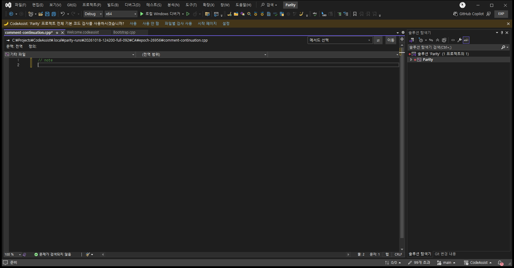
참고 화면](../assets/imports/docs/validation/debug-0.0.92/CA-comment-continuation-after.png)
completion
before
[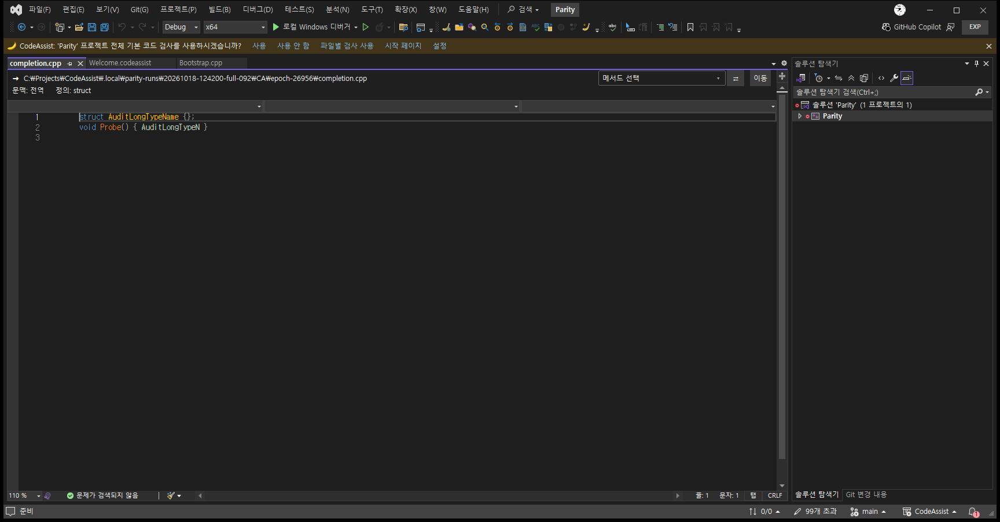
참고 화면](../assets/imports/docs/validation/debug-0.0.92/CA-completion-before.png)
after
[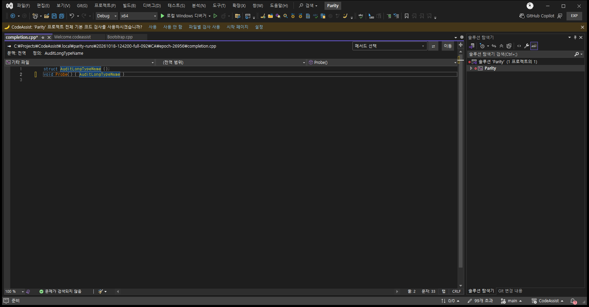
참고 화면](../assets/imports/docs/validation/debug-0.0.92/CA-completion-after.png)
feature-045
before
[참고 화면](../assets/imports/docs/validation/debug-0.0.92/CA-feature-045-before.png)
dialog
[참고 화면](../assets/imports/docs/validation/debug-0.0.92/CA-feature-045-dialog.png)
after
[참고 화면](../assets/imports/docs/validation/debug-0.0.92/CA-feature-045-after.png)
pair-insert
before
[참고 화면](../assets/imports/docs/validation/debug-0.0.92/CA-pair-insert-before.png)
after
[참고 화면](../assets/imports/docs/validation/debug-0.0.92/CA-pair-insert-after.png)
feature-047
before
[참고 화면](../assets/imports/docs/validation/debug-0.0.92/CA-feature-047-before.png)
dialog
[참고 화면](../assets/imports/docs/validation/debug-0.0.92/CA-feature-047-dialog.png)
after
[참고 화면](../assets/imports/docs/validation/debug-0.0.92/CA-feature-047-after.png)
feature-048
before
[참고 화면](../assets/imports/docs/validation/debug-0.0.92/CA-feature-048-before.png)
dialog
[참고 화면](../assets/imports/docs/validation/debug-0.0.92/CA-feature-048-dialog.png)
after
[참고 화면](../assets/imports/docs/validation/debug-0.0.92/CA-feature-048-after.png)
reset-zoom
before
[참고 화면](../assets/imports/docs/validation/debug-0.0.92/CA-reset-zoom-before.png)
after
[참고 화면](../assets/imports/docs/validation/debug-0.0.92/CA-reset-zoom-after.png)
shorthand
before
[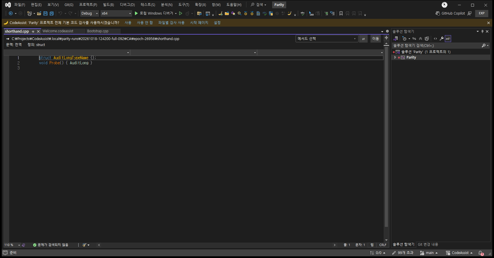
참고 화면](../assets/imports/docs/validation/debug-0.0.92/CA-shorthand-before.png)
after
[참고 화면](../assets/imports/docs/validation/debug-0.0.92/CA-shorthand-after.png)
smart-select
before
[참고 화면](../assets/imports/docs/validation/debug-0.0.92/CA-smart-select-before.png)
after
[참고 화면](../assets/imports/docs/validation/debug-0.0.92/CA-smart-select-after.png)
feature-052
before
[참고 화면](../assets/imports/docs/validation/debug-0.0.92/CA-feature-052-before.png)
dialog
[참고 화면](../assets/imports/docs/validation/debug-0.0.92/CA-feature-052-dialog.png)
after
[참고 화면](../assets/imports/docs/validation/debug-0.0.92/CA-feature-052-after.png)
feature-053
before
[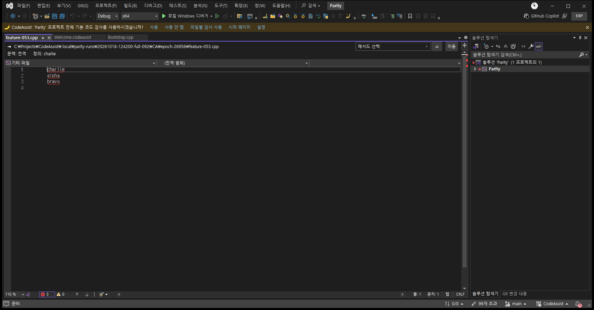
참고 화면](../assets/imports/docs/validation/debug-0.0.92/CA-feature-053-before.png)
dialog
[참고 화면](../assets/imports/docs/validation/debug-0.0.92/CA-feature-053-dialog.png)
after
[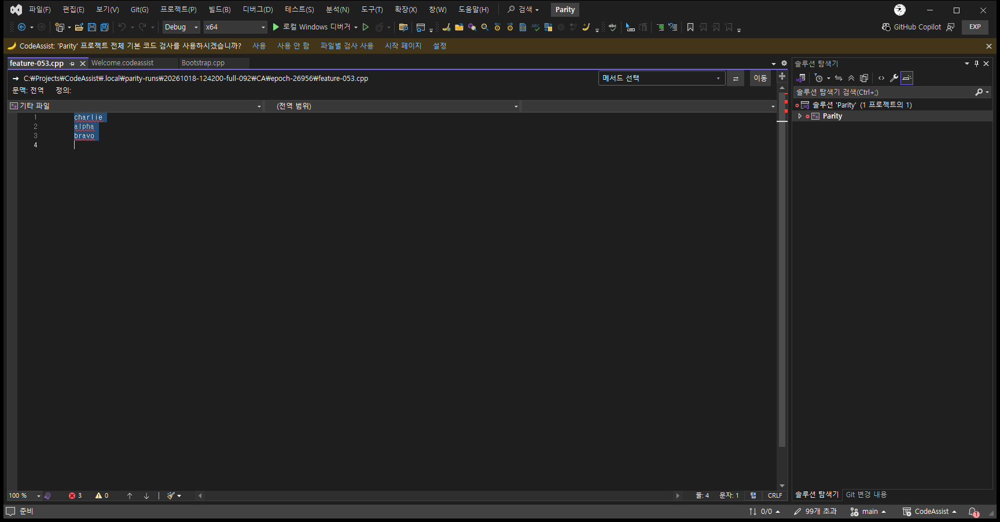
참고 화면](../assets/imports/docs/validation/debug-0.0.92/CA-feature-053-after.png)
feature-054
before
[참고 화면](../assets/imports/docs/validation/debug-0.0.92/CA-feature-054-before.png)
dialog
[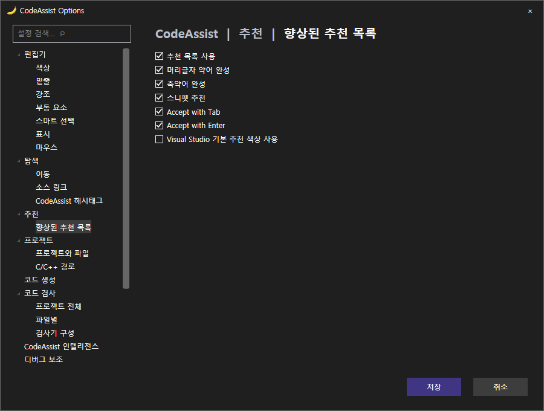
참고 화면](../assets/imports/docs/validation/debug-0.0.92/CA-feature-054-dialog.png)
after
[참고 화면](../assets/imports/docs/validation/debug-0.0.92/CA-feature-054-after.png)
surround-word
before
[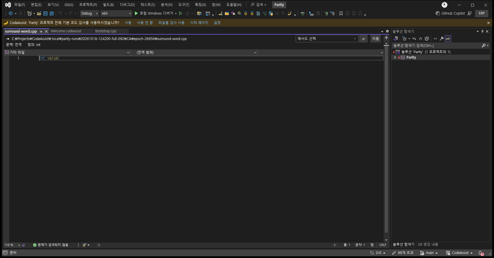
참고 화면](../assets/imports/docs/validation/debug-0.0.92/CA-surround-word-before.png)
after
[참고 화면](../assets/imports/docs/validation/debug-0.0.92/CA-surround-word-after.png)
feature-056
before
[참고 화면](../assets/imports/docs/validation/debug-0.0.92/CA-feature-056-before.png)
dialog
[참고 화면](../assets/imports/docs/validation/debug-0.0.92/CA-feature-056-dialog.png)
after
[참고 화면](../assets/imports/docs/validation/debug-0.0.92/CA-feature-056-after.png)
feature-057
before
[참고 화면](../assets/imports/docs/validation/debug-0.0.92/CA-feature-057-before.png)
dialog
[참고 화면](../assets/imports/docs/validation/debug-0.0.92/CA-feature-057-dialog.png)
after
[참고 화면](../assets/imports/docs/validation/debug-0.0.92/CA-feature-057-after.png)
feature-058
before
[참고 화면](../assets/imports/docs/validation/debug-0.0.92/CA-feature-058-before.png)
dialog
[참고 화면](../assets/imports/docs/validation/debug-0.0.92/CA-feature-058-dialog.png)
after
[참고 화면](../assets/imports/docs/validation/debug-0.0.92/CA-feature-058-after.png)
feature-059
before
[참고 화면](../assets/imports/docs/validation/debug-0.0.92/CA-feature-059-before.png)
dialog
[참고 화면](../assets/imports/docs/validation/debug-0.0.92/CA-feature-059-dialog.png)
after
[참고 화면](../assets/imports/docs/validation/debug-0.0.92/CA-feature-059-after.png)
feature-060
before
[참고 화면](../assets/imports/docs/validation/debug-0.0.92/CA-feature-060-before.png)
dialog
[참고 화면](../assets/imports/docs/validation/debug-0.0.92/CA-feature-060-dialog.png)
after
[참고 화면](../assets/imports/docs/validation/debug-0.0.92/CA-feature-060-after.png)
feature-061
before
[참고 화면](../assets/imports/docs/validation/debug-0.0.92/CA-feature-061-before.png)
dialog
[참고 화면](../assets/imports/docs/validation/debug-0.0.92/CA-feature-061-dialog.png)
after
[참고 화면](../assets/imports/docs/validation/debug-0.0.92/CA-feature-061-after.png)
feature-062
before
[참고 화면](../assets/imports/docs/validation/debug-0.0.92/CA-feature-062-before.png)
dialog
[참고 화면](../assets/imports/docs/validation/debug-0.0.92/CA-feature-062-dialog.png)
after
[참고 화면](../assets/imports/docs/validation/debug-0.0.92/CA-feature-062-after.png)
feature-063
before
[참고 화면](../assets/imports/docs/validation/debug-0.0.92/CA-feature-063-before.png)
dialog
[참고 화면](../assets/imports/docs/validation/debug-0.0.92/CA-feature-063-dialog.png)
after
[참고 화면](../assets/imports/docs/validation/debug-0.0.92/CA-feature-063-after.png)
feature-064
before
[참고 화면](../assets/imports/docs/validation/debug-0.0.92/CA-feature-064-before.png)
dialog
[참고 화면](../assets/imports/docs/validation/debug-0.0.92/CA-feature-064-dialog.png)
after
[참고 화면](../assets/imports/docs/validation/debug-0.0.92/CA-feature-064-after.png)
feature-065
before
[참고 화면](../assets/imports/docs/validation/debug-0.0.92/CA-feature-065-before.png)
dialog
[참고 화면](../assets/imports/docs/validation/debug-0.0.92/CA-feature-065-dialog.png)
after
[참고 화면](../assets/imports/docs/validation/debug-0.0.92/CA-feature-065-after.png)
feature-066
before
[참고 화면](../assets/imports/docs/validation/debug-0.0.92/CA-feature-066-before.png)
dialog
[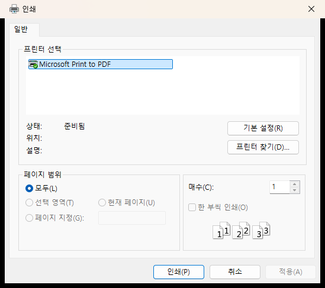
참고 화면](../assets/imports/docs/validation/debug-0.0.92/CA-feature-066-dialog.png)
after
[참고 화면](../assets/imports/docs/validation/debug-0.0.92/CA-feature-066-after.png)
feature-067
before
[참고 화면](../assets/imports/docs/validation/debug-0.0.92/CA-feature-067-before.png)
dialog
[참고 화면](../assets/imports/docs/validation/debug-0.0.92/CA-feature-067-dialog.png)
after
[참고 화면](../assets/imports/docs/validation/debug-0.0.92/CA-feature-067-after.png)
feature-068
before
[참고 화면](../assets/imports/docs/validation/debug-0.0.92/CA-feature-068-before.png)
dialog
[참고 화면](../assets/imports/docs/validation/debug-0.0.92/CA-feature-068-dialog.png)
after
[참고 화면](../assets/imports/docs/validation/debug-0.0.92/CA-feature-068-after.png)
dot-to-arrow
before
[참고 화면](../assets/imports/docs/validation/debug-0.0.92/CA-dot-to-arrow-before.png)
after
[참고 화면](../assets/imports/docs/validation/debug-0.0.92/CA-dot-to-arrow-after.png)
feature-070
before
[참고 화면](../assets/imports/docs/validation/debug-0.0.92/CA-feature-070-before.png)
dialog
[참고 화면](../assets/imports/docs/validation/debug-0.0.92/CA-feature-070-dialog.png)
after
[참고 화면](../assets/imports/docs/validation/debug-0.0.92/CA-feature-070-after.png)
feature-071
before
[참고 화면](../assets/imports/docs/validation/debug-0.0.92/CA-feature-071-before.png)
dialog
[참고 화면](../assets/imports/docs/validation/debug-0.0.92/CA-feature-071-dialog.png)
after
[참고 화면](../assets/imports/docs/validation/debug-0.0.92/CA-feature-071-after.png)
feature-072
before
[참고 화면](../assets/imports/docs/validation/debug-0.0.92/CA-feature-072-before.png)
dialog
[참고 화면](../assets/imports/docs/validation/debug-0.0.92/CA-feature-072-dialog.png)
after
[참고 화면](../assets/imports/docs/validation/debug-0.0.92/CA-feature-072-after.png)
repair-case
before
[참고 화면](../assets/imports/docs/validation/debug-0.0.92/CA-repair-case-before.png)
after
[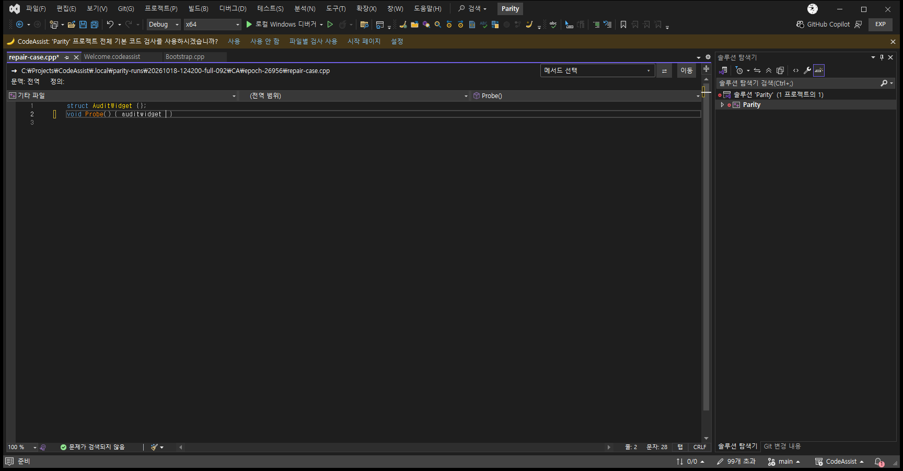
참고 화면](../assets/imports/docs/validation/debug-0.0.92/CA-repair-case-after.png)
feature-074
before
[참고 화면](../assets/imports/docs/validation/debug-0.0.92/CA-feature-074-before.png)
dialog
[참고 화면](../assets/imports/docs/validation/debug-0.0.92/CA-feature-074-dialog.png)
after
[참고 화면](../assets/imports/docs/validation/debug-0.0.92/CA-feature-074-after.png)
feature-075
before
[참고 화면](../assets/imports/docs/validation/debug-0.0.92/CA-feature-075-before.png)
dialog
[참고 화면](../assets/imports/docs/validation/debug-0.0.92/CA-feature-075-dialog.png)
after
[참고 화면](../assets/imports/docs/validation/debug-0.0.92/CA-feature-075-after.png)
feature-076
before
[참고 화면](../assets/imports/docs/validation/debug-0.0.92/CA-feature-076-before.png)
dialog
[참고 화면](../assets/imports/docs/validation/debug-0.0.92/CA-feature-076-dialog.png)
after
[참고 화면](../assets/imports/docs/validation/debug-0.0.92/CA-feature-076-after.png)
feature-077
before
[참고 화면](../assets/imports/docs/validation/debug-0.0.92/CA-feature-077-before.png)
dialog
[참고 화면](../assets/imports/docs/validation/debug-0.0.92/CA-feature-077-dialog.png)
after
[참고 화면](../assets/imports/docs/validation/debug-0.0.92/CA-feature-077-after.png)
feature-078
before
[참고 화면](../assets/imports/docs/validation/debug-0.0.92/CA-feature-078-before.png)
dialog
[참고 화면](../assets/imports/docs/validation/debug-0.0.92/CA-feature-078-dialog.png)
after
[참고 화면](../assets/imports/docs/validation/debug-0.0.92/CA-feature-078-after.png)
feature-079
before
[참고 화면](../assets/imports/docs/validation/debug-0.0.92/CA-feature-079-before.png)
dialog
[참고 화면](../assets/imports/docs/validation/debug-0.0.92/CA-feature-079-dialog.png)
after
[참고 화면](../assets/imports/docs/validation/debug-0.0.92/CA-feature-079-after.png)
feature-080
before
[참고 화면](../assets/imports/docs/validation/debug-0.0.92/CA-feature-080-before.png)
dialog
[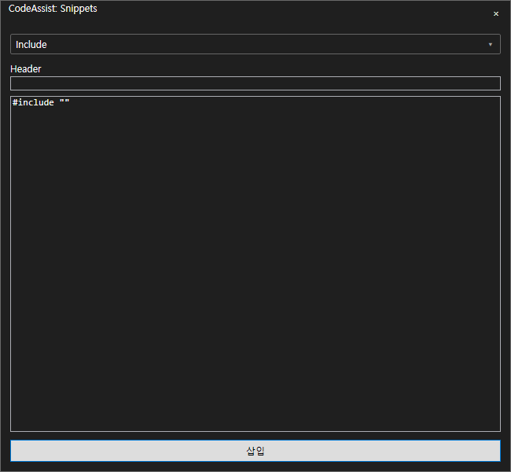
참고 화면](../assets/imports/docs/validation/debug-0.0.92/CA-feature-080-dialog.png)
after
[참고 화면](../assets/imports/docs/validation/debug-0.0.92/CA-feature-080-after.png)
feature-081
before
[참고 화면](../assets/imports/docs/validation/debug-0.0.92/CA-feature-081-before.png)
dialog
[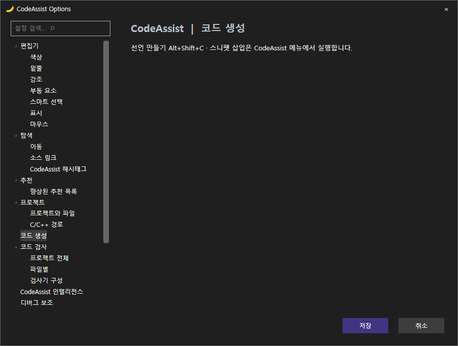
참고 화면](../assets/imports/docs/validation/debug-0.0.92/CA-feature-081-dialog.png)
after
[참고 화면](../assets/imports/docs/validation/debug-0.0.92/CA-feature-081-after.png)
feature-082
before
[참고 화면](../assets/imports/docs/validation/debug-0.0.92/CA-feature-082-before.png)
dialog
[참고 화면](../assets/imports/docs/validation/debug-0.0.92/CA-feature-082-dialog.png)
after
[참고 화면](../assets/imports/docs/validation/debug-0.0.92/CA-feature-082-after.png)
feature-083
before
[참고 화면](../assets/imports/docs/validation/debug-0.0.92/CA-feature-083-before.png)
dialog
[참고 화면](../assets/imports/docs/validation/debug-0.0.92/CA-feature-083-dialog.png)
after
[참고 화면](../assets/imports/docs/validation/debug-0.0.92/CA-feature-083-after.png)
feature-084
before
[참고 화면](../assets/imports/docs/validation/debug-0.0.92/CA-feature-084-before.png)
dialog
[참고 화면](../assets/imports/docs/validation/debug-0.0.92/CA-feature-084-dialog.png)
after
[참고 화면](../assets/imports/docs/validation/debug-0.0.92/CA-feature-084-after.png)
feature-085
before
[참고 화면](../assets/imports/docs/validation/debug-0.0.92/CA-feature-085-before.png)
dialog
[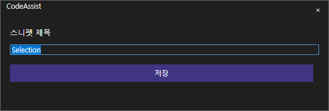
참고 화면](../assets/imports/docs/validation/debug-0.0.92/CA-feature-085-dialog.png)
after
[참고 화면](../assets/imports/docs/validation/debug-0.0.92/CA-feature-085-after.png)
feature-086
before
[참고 화면](../assets/imports/docs/validation/debug-0.0.92/CA-feature-086-before.png)
dialog
[참고 화면](../assets/imports/docs/validation/debug-0.0.92/CA-feature-086-dialog.png)
after
[참고 화면](../assets/imports/docs/validation/debug-0.0.92/CA-feature-086-after.png)
feature-087
before
[참고 화면](../assets/imports/docs/validation/debug-0.0.92/CA-feature-087-before.png)
dialog
[참고 화면](../assets/imports/docs/validation/debug-0.0.92/CA-feature-087-dialog.png)
after
[참고 화면](../assets/imports/docs/validation/debug-0.0.92/CA-feature-087-after.png)
feature-088
before
[참고 화면](../assets/imports/docs/validation/debug-0.0.92/CA-feature-088-before.png)
dialog
[참고 화면](../assets/imports/docs/validation/debug-0.0.92/CA-feature-088-dialog.png)
after
[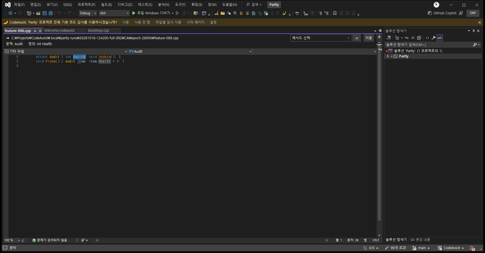
참고 화면](../assets/imports/docs/validation/debug-0.0.92/CA-feature-088-after.png)
feature-089
before
[참고 화면](../assets/imports/docs/validation/debug-0.0.92/CA-feature-089-before.png)
dialog
[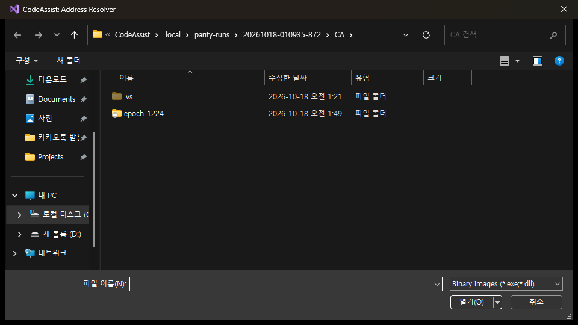
참고 화면](../assets/imports/docs/validation/debug-0.0.92/CA-feature-089-dialog.png)
after
[참고 화면](../assets/imports/docs/validation/debug-0.0.92/CA-feature-089-after.png)
feature-090
before
[참고 화면](../assets/imports/docs/validation/debug-0.0.92/CA-feature-090-before.png)
dialog
[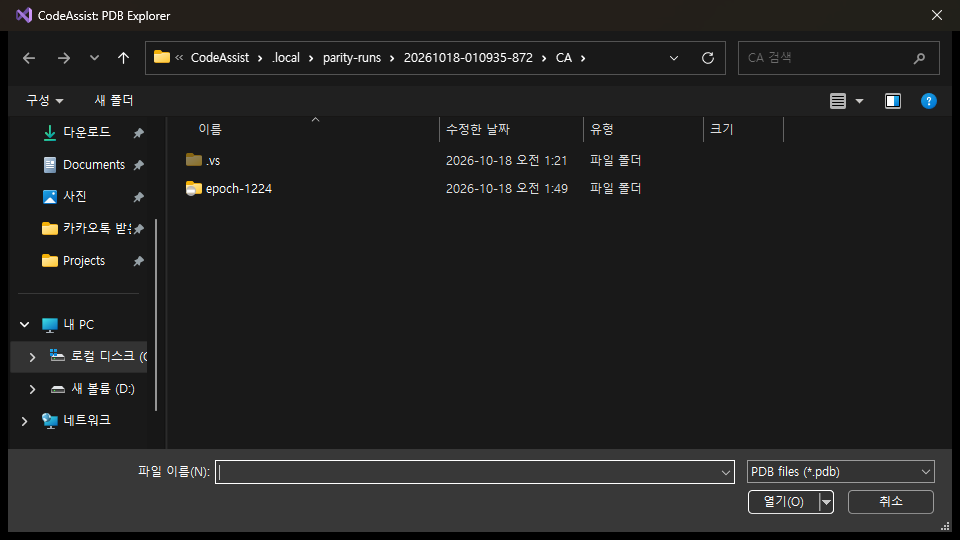
참고 화면](../assets/imports/docs/validation/debug-0.0.92/CA-feature-090-dialog.png)
after
[참고 화면](../assets/imports/docs/validation/debug-0.0.92/CA-feature-090-after.png)
feature-091
before
[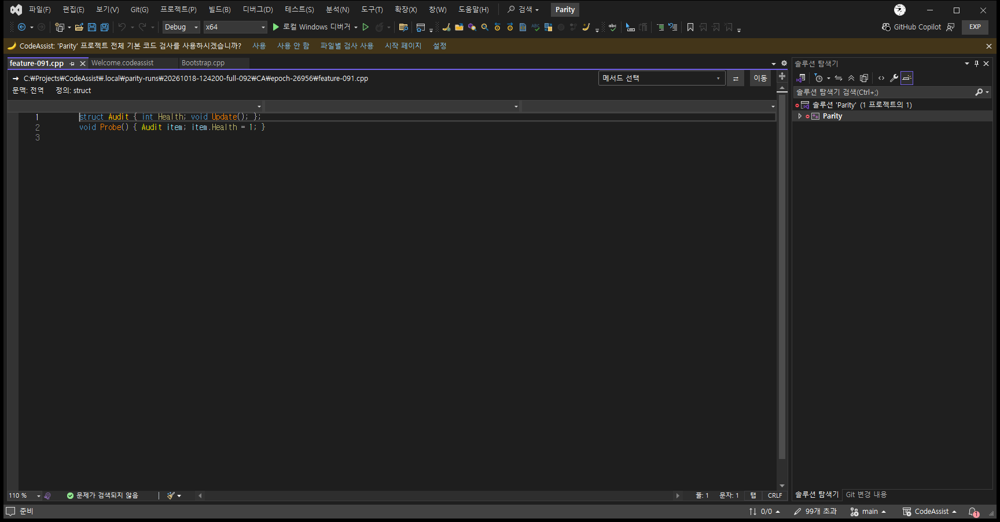
참고 화면](../assets/imports/docs/validation/debug-0.0.92/CA-feature-091-before.png)
dialog
[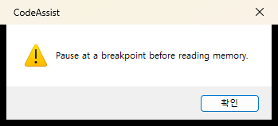
참고 화면](../assets/imports/docs/validation/debug-0.0.92/CA-feature-091-dialog.png)
after
[참고 화면](../assets/imports/docs/validation/debug-0.0.92/CA-feature-091-after.png)
feature-092
before
[참고 화면](../assets/imports/docs/validation/debug-0.0.92/CA-feature-092-before.png)
dialog
[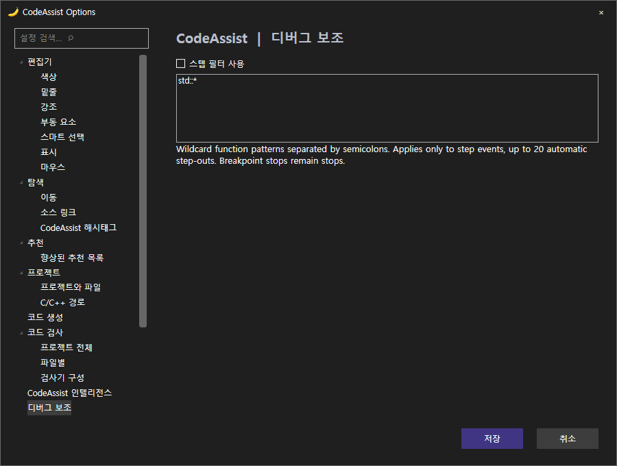
참고 화면](../assets/imports/docs/validation/debug-0.0.92/CA-feature-092-dialog.png)
after
[참고 화면](../assets/imports/docs/validation/debug-0.0.92/CA-feature-092-after.png)
feature-093
before
[참고 화면](../assets/imports/docs/validation/debug-0.0.92/CA-feature-093-before.png)
dialog
[참고 화면](../assets/imports/docs/validation/debug-0.0.92/CA-feature-093-dialog.png)
after
[참고 화면](../assets/imports/docs/validation/debug-0.0.92/CA-feature-093-after.png)
feature-094
before
[참고 화면](../assets/imports/docs/validation/debug-0.0.92/CA-feature-094-before.png)
dialog
[참고 화면](../assets/imports/docs/validation/debug-0.0.92/CA-feature-094-dialog.png)
after
[참고 화면](../assets/imports/docs/validation/debug-0.0.92/CA-feature-094-after.png)
feature-095
before
[참고 화면](../assets/imports/docs/validation/debug-0.0.92/CA-feature-095-before.png)
dialog
[참고 화면](../assets/imports/docs/validation/debug-0.0.92/CA-feature-095-dialog.png)
after
[참고 화면](../assets/imports/docs/validation/debug-0.0.92/CA-feature-095-after.png)
feature-096
before
[참고 화면](../assets/imports/docs/validation/debug-0.0.92/CA-feature-096-before.png)
dialog
[참고 화면](../assets/imports/docs/validation/debug-0.0.92/CA-feature-096-dialog.png)
after
[참고 화면](../assets/imports/docs/validation/debug-0.0.92/CA-feature-096-after.png)
feature-097
before
[참고 화면](../assets/imports/docs/validation/debug-0.0.92/CA-feature-097-before.png)
dialog
[참고 화면](../assets/imports/docs/validation/debug-0.0.92/CA-feature-097-dialog.png)
after
[참고 화면](../assets/imports/docs/validation/debug-0.0.92/CA-feature-097-after.png)
feature-098
before
[참고 화면](../assets/imports/docs/validation/debug-0.0.92/CA-feature-098-before.png)
dialog
[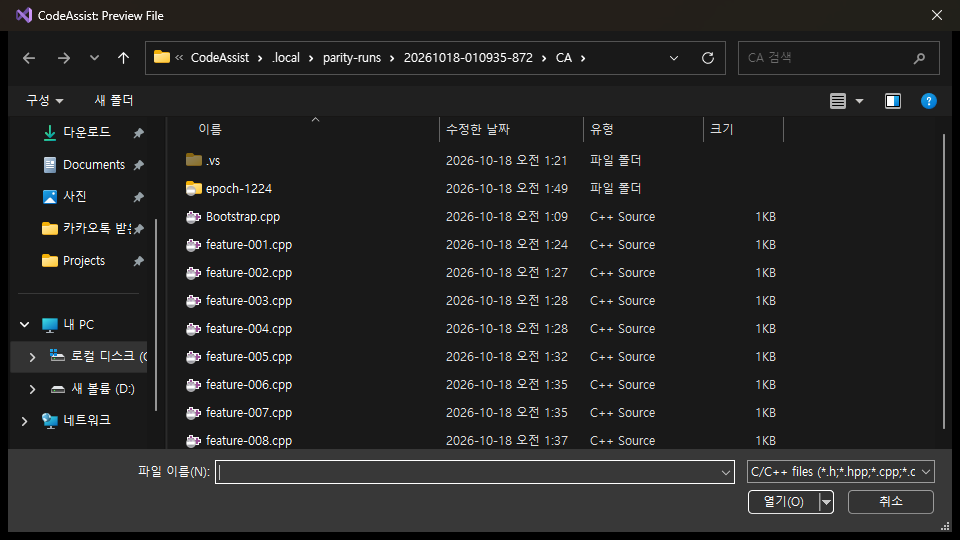
참고 화면](../assets/imports/docs/validation/debug-0.0.92/CA-feature-098-dialog.png)
after
[참고 화면](../assets/imports/docs/validation/debug-0.0.92/CA-feature-098-after.png)
feature-099
before
[참고 화면](../assets/imports/docs/validation/debug-0.0.92/CA-feature-099-before.png)
dialog
[참고 화면](../assets/imports/docs/validation/debug-0.0.92/CA-feature-099-dialog.png)
after
[참고 화면](../assets/imports/docs/validation/debug-0.0.92/CA-feature-099-after.png)
feature-100
before
[참고 화면](../assets/imports/docs/validation/debug-0.0.92/CA-feature-100-before.png)
dialog
[참고 화면](../assets/imports/docs/validation/debug-0.0.92/CA-feature-100-dialog.png)
after
[참고 화면](../assets/imports/docs/validation/debug-0.0.92/CA-feature-100-after.png)
feature-101
before
[참고 화면](../assets/imports/docs/validation/debug-0.0.92/CA-feature-101-before.png)
dialog
[참고 화면](../assets/imports/docs/validation/debug-0.0.92/CA-feature-101-dialog.png)
after
[참고 화면](../assets/imports/docs/validation/debug-0.0.92/CA-feature-101-after.png)
feature-102
before
[참고 화면](../assets/imports/docs/validation/debug-0.0.92/CA-feature-102-before.png)
dialog
[참고 화면](../assets/imports/docs/validation/debug-0.0.92/CA-feature-102-dialog.png)
after
[참고 화면](../assets/imports/docs/validation/debug-0.0.92/CA-feature-102-after.png)
feature-103
before
[참고 화면](../assets/imports/docs/validation/debug-0.0.92/CA-feature-103-before.png)
dialog
[참고 화면](../assets/imports/docs/validation/debug-0.0.92/CA-feature-103-dialog.png)
after
[참고 화면](../assets/imports/docs/validation/debug-0.0.92/CA-feature-103-after.png)
feature-104
before
[참고 화면](../assets/imports/docs/validation/debug-0.0.92/CA-feature-104-before.png)
dialog
[참고 화면](../assets/imports/docs/validation/debug-0.0.92/CA-feature-104-dialog.png)
after
[참고 화면](../assets/imports/docs/validation/debug-0.0.92/CA-feature-104-after.png)
feature-105
before
[참고 화면](../assets/imports/docs/validation/debug-0.0.92/CA-feature-105-before.png)
dialog
[참고 화면](../assets/imports/docs/validation/debug-0.0.92/CA-feature-105-dialog.png)
after
[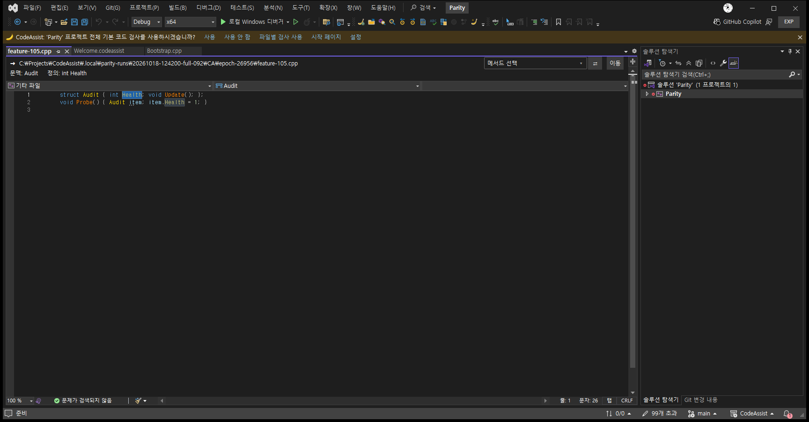
참고 화면](../assets/imports/docs/validation/debug-0.0.92/CA-feature-105-after.png)
feature-106
before
[참고 화면](../assets/imports/docs/validation/debug-0.0.92/CA-feature-106-before.png)
dialog
[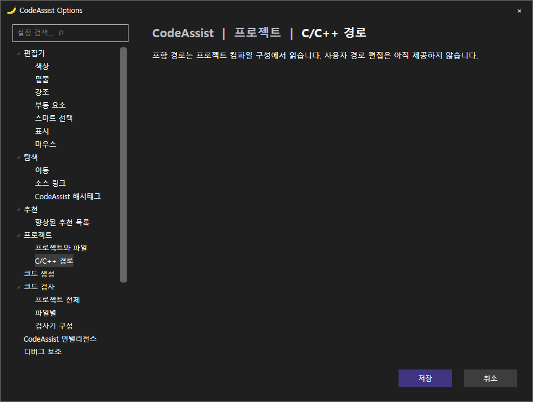
참고 화면](../assets/imports/docs/validation/debug-0.0.92/CA-feature-106-dialog.png)
after
[참고 화면](../assets/imports/docs/validation/debug-0.0.92/CA-feature-106-after.png)
feature-107
before
[참고 화면](../assets/imports/docs/validation/debug-0.0.92/CA-feature-107-before.png)
dialog
[참고 화면](../assets/imports/docs/validation/debug-0.0.92/CA-feature-107-dialog.png)
after
[참고 화면](../assets/imports/docs/validation/debug-0.0.92/CA-feature-107-after.png)
feature-108
before
[참고 화면](../assets/imports/docs/validation/debug-0.0.92/CA-feature-108-before.png)
dialog
[참고 화면](../assets/imports/docs/validation/debug-0.0.92/CA-feature-108-dialog.png)
after
[참고 화면](../assets/imports/docs/validation/debug-0.0.92/CA-feature-108-after.png)
pair-delete
before
[참고 화면](../assets/imports/docs/validation/debug-0.0.92/CA-pair-delete-before.png)
after
[참고 화면](../assets/imports/docs/validation/debug-0.0.92/CA-pair-delete-after.png)
scope-previous
before
[참고 화면](../assets/imports/docs/validation/debug-0.0.92/CA-scope-previous-before.png)
after
[참고 화면](../assets/imports/docs/validation/debug-0.0.92/CA-scope-previous-after.png)
insert-bracket
before
[참고 화면](../assets/imports/docs/validation/debug-0.0.92/CA-insert-bracket-before.png)
after
[참고 화면](../assets/imports/docs/validation/debug-0.0.92/CA-insert-bracket-after.png)
surround-bracket
before
[참고 화면](../assets/imports/docs/validation/debug-0.0.92/CA-surround-bracket-before.png)
after
[참고 화면](../assets/imports/docs/validation/debug-0.0.92/CA-surround-bracket-after.png)
insert-brace
before
[참고 화면](../assets/imports/docs/validation/debug-0.0.92/CA-insert-brace-before.png)
after
[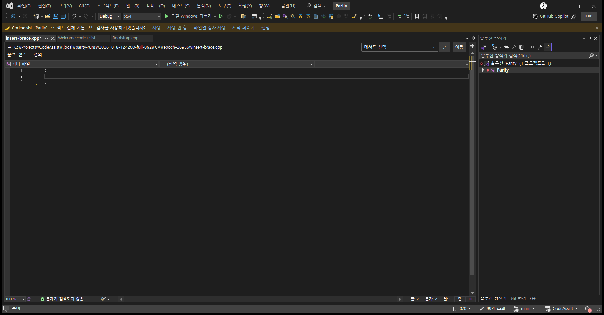
참고 화면](../assets/imports/docs/validation/debug-0.0.92/CA-insert-brace-after.png)
surround-brace
before
[참고 화면](../assets/imports/docs/validation/debug-0.0.92/CA-surround-brace-before.png)
after
[참고 화면](../assets/imports/docs/validation/debug-0.0.92/CA-surround-brace-after.png)
insert-quote
before
[참고 화면](../assets/imports/docs/validation/debug-0.0.92/CA-insert-quote-before.png)
after
[참고 화면](../assets/imports/docs/validation/debug-0.0.92/CA-insert-quote-after.png)
surround-quote
before
[참고 화면](../assets/imports/docs/validation/debug-0.0.92/CA-surround-quote-before.png)
after
[참고 화면](../assets/imports/docs/validation/debug-0.0.92/CA-surround-quote-after.png)
insert-apostrophe
before
[참고 화면](../assets/imports/docs/validation/debug-0.0.92/CA-insert-apostrophe-before.png)
after
[참고 화면](../assets/imports/docs/validation/debug-0.0.92/CA-insert-apostrophe-after.png)
surround-apostrophe
before
[참고 화면](../assets/imports/docs/validation/debug-0.0.92/CA-surround-apostrophe-before.png)
after
[참고 화면](../assets/imports/docs/validation/debug-0.0.92/CA-surround-apostrophe-after.png)
comment-indented
before
[참고 화면](../assets/imports/docs/validation/debug-0.0.92/CA-comment-indented-before.png)
after
[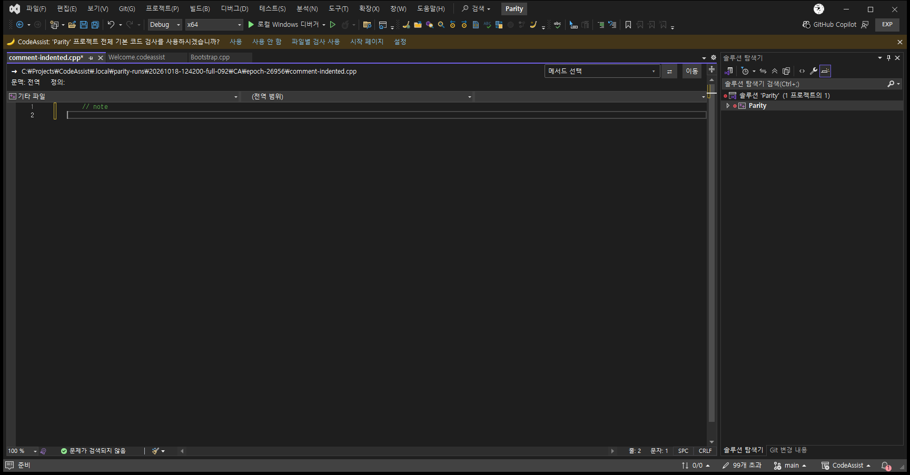
참고 화면](../assets/imports/docs/validation/debug-0.0.92/CA-comment-indented-after.png)
comment-multiline
before
[참고 화면](../assets/imports/docs/validation/debug-0.0.92/CA-comment-multiline-before.png)
after
[참고 화면](../assets/imports/docs/validation/debug-0.0.92/CA-comment-multiline-after.png)
comment-star
before
[참고 화면](../assets/imports/docs/validation/debug-0.0.92/CA-comment-star-before.png)
after
[참고 화면](../assets/imports/docs/validation/debug-0.0.92/CA-comment-star-after.png)
controlled-comment-continuation
before
[참고 화면](../assets/imports/docs/validation/debug-0.0.92/CA-controlled-comment-continuation-before.png)
after
[참고 화면](../assets/imports/docs/validation/debug-0.0.92/CA-controlled-comment-continuation-after.png)
controlled-dot-to-arrow
before
[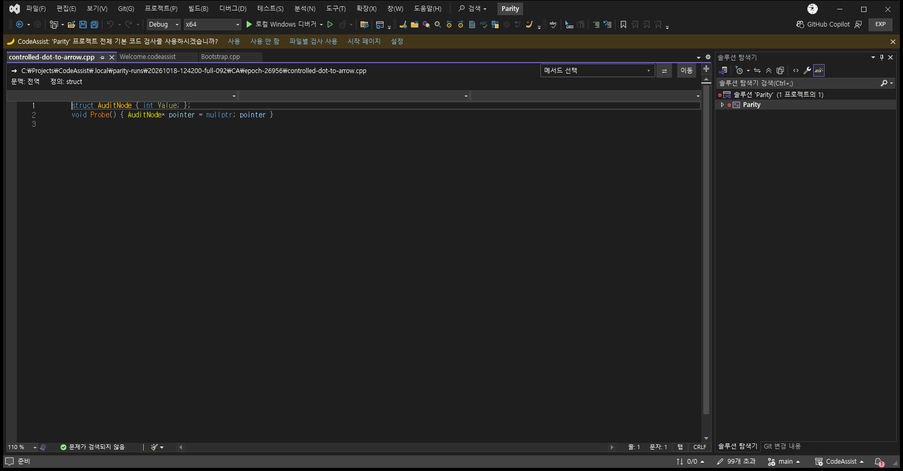
참고 화면](../assets/imports/docs/validation/debug-0.0.92/CA-controlled-dot-to-arrow-before.png)
after
[참고 화면](../assets/imports/docs/validation/debug-0.0.92/CA-controlled-dot-to-arrow-after.png)
controlled-repair-case
before
[참고 화면](../assets/imports/docs/validation/debug-0.0.92/CA-controlled-repair-case-before.png)
after
[참고 화면](../assets/imports/docs/validation/debug-0.0.92/CA-controlled-repair-case-after.png)
controlled-smart-select
before
[참고 화면](../assets/imports/docs/validation/debug-0.0.92/CA-controlled-smart-select-before.png)
after
[참고 화면](../assets/imports/docs/validation/debug-0.0.92/CA-controlled-smart-select-after.png)
ui-welcome
before
[참고 화면](../assets/imports/docs/validation/debug-0.0.92/CA-ui-welcome-before.png)
dialog
[참고 화면](../assets/imports/docs/validation/debug-0.0.92/CA-ui-welcome-dialog.png)
after
[참고 화면](../assets/imports/docs/validation/debug-0.0.92/CA-ui-welcome-after.png)
결과·설치
최종 수치·DLL 해시 · VA 실제 출력 대조 · 전체 검사 원본 · 통제 검사 · 회귀 테스트 · 최신 계열 설치 파일 · VS2019 설치 파일
일반 VS·Unreal 프로젝트는 유지하고 Exp 프로필에서만 최신 DLL로 검증했습니다. VA는 기존 원본 실행 기록을 기준으로 했습니다. 문서 부분 명세108/108 확보와 전체 역분석·완전 동등성은 별개입니다.
제안 시간10분 · 실제 7분 48초 · 2026-10-18 12:46:00 KST. XERJ 사용.
최종 보고
제안 시간: 10분. 실제 소요: 9분 12초, 완료 시각: 2026-10-18 12:47:24 KST.
LINE 알림 미발송: LINE_NOT_CONFIGURED. 사용자 환경 변수 LINE_CHANNEL_ACCESS_TOKEN과 LINE_USER_ID 설정이 필요합니다.
원문과 편집 이력
보존된 원문 열기
원문 SHA-256: 5745cbfa6f6c3f240964d0c0cc46ad8880c794353ad64d702fc6593b49c2d0a8
표시 날짜는 원본 파일의 수정 시각입니다. 작업 완료 시각은 원문에 있는 값을 기준으로 확인합니다.
 Tracefolio REPORTS & ISSUES
Tracefolio REPORTS & ISSUES](../assets/imports/docs/validation/debug-0.0.92/CA-feature-001-dialog.png)
](../assets/imports/docs/validation/debug-0.0.92/CA-feature-002-dialog.png)
](../assets/imports/docs/validation/debug-0.0.92/CA-feature-003-dialog.png)
](../assets/imports/docs/validation/debug-0.0.92/CA-feature-004-dialog.png)
](../assets/imports/docs/validation/debug-0.0.92/CA-feature-006-dialog.png)
](../assets/imports/docs/validation/debug-0.0.92/CA-feature-007-dialog.png)
](../assets/imports/docs/validation/debug-0.0.92/CA-feature-008-dialog.png)
](../assets/imports/docs/validation/debug-0.0.92/CA-feature-010-dialog.png)
](../assets/imports/docs/validation/debug-0.0.92/CA-feature-011-dialog.png)
](../assets/imports/docs/validation/debug-0.0.92/CA-feature-014-dialog.png)
](../assets/imports/docs/validation/debug-0.0.92/CA-feature-015-dialog.png)
](../assets/imports/docs/validation/debug-0.0.92/CA-feature-016-dialog.png)
](../assets/imports/docs/validation/debug-0.0.92/CA-feature-017-dialog.png)
](../assets/imports/docs/validation/debug-0.0.92/CA-feature-018-dialog.png)
](../assets/imports/docs/validation/debug-0.0.92/CA-feature-019-dialog.png)
](../assets/imports/docs/validation/debug-0.0.92/CA-feature-025-dialog.png)
](../assets/imports/docs/validation/debug-0.0.92/CA-feature-026-dialog.png)
](../assets/imports/docs/validation/debug-0.0.92/CA-feature-029-dialog.png)
](../assets/imports/docs/validation/debug-0.0.92/CA-feature-030-dialog.png)
](../assets/imports/docs/validation/debug-0.0.92/CA-feature-032-dialog.png)
](../assets/imports/docs/validation/debug-0.0.92/CA-feature-034-dialog.png)
](../assets/imports/docs/validation/debug-0.0.92/CA-feature-038-dialog.png)
](../assets/imports/docs/validation/debug-0.0.92/CA-feature-039-dialog.png)
](../assets/imports/docs/validation/debug-0.0.92/CA-feature-045-dialog.png)
](../assets/imports/docs/validation/debug-0.0.92/CA-feature-047-dialog.png)
](../assets/imports/docs/validation/debug-0.0.92/CA-feature-048-dialog.png)
](../assets/imports/docs/validation/debug-0.0.92/CA-feature-052-dialog.png)
](../assets/imports/docs/validation/debug-0.0.92/CA-feature-056-dialog.png)
](../assets/imports/docs/validation/debug-0.0.92/CA-feature-057-dialog.png)
](../assets/imports/docs/validation/debug-0.0.92/CA-feature-058-dialog.png)
](../assets/imports/docs/validation/debug-0.0.92/CA-feature-059-dialog.png)
](../assets/imports/docs/validation/debug-0.0.92/CA-feature-060-dialog.png)
](../assets/imports/docs/validation/debug-0.0.92/CA-feature-061-dialog.png)
](../assets/imports/docs/validation/debug-0.0.92/CA-feature-062-dialog.png)
](../assets/imports/docs/validation/debug-0.0.92/CA-feature-063-dialog.png)
](../assets/imports/docs/validation/debug-0.0.92/CA-feature-064-dialog.png)
](../assets/imports/docs/validation/debug-0.0.92/CA-feature-065-dialog.png)
](../assets/imports/docs/validation/debug-0.0.92/CA-feature-067-dialog.png)
](../assets/imports/docs/validation/debug-0.0.92/CA-feature-068-dialog.png)
](../assets/imports/docs/validation/debug-0.0.92/CA-feature-070-dialog.png)
](../assets/imports/docs/validation/debug-0.0.92/CA-feature-071-dialog.png)
](../assets/imports/docs/validation/debug-0.0.92/CA-feature-072-dialog.png)
](../assets/imports/docs/validation/debug-0.0.92/CA-feature-074-dialog.png)
](../assets/imports/docs/validation/debug-0.0.92/CA-feature-075-dialog.png)
](../assets/imports/docs/validation/debug-0.0.92/CA-feature-076-dialog.png)
](../assets/imports/docs/validation/debug-0.0.92/CA-feature-077-dialog.png)
](../assets/imports/docs/validation/debug-0.0.92/CA-feature-078-dialog.png)
](../assets/imports/docs/validation/debug-0.0.92/CA-feature-079-dialog.png)
](../assets/imports/docs/validation/debug-0.0.92/CA-feature-082-dialog.png)
](../assets/imports/docs/validation/debug-0.0.92/CA-feature-083-dialog.png)
](../assets/imports/docs/validation/debug-0.0.92/CA-feature-084-dialog.png)
](../assets/imports/docs/validation/debug-0.0.92/CA-feature-086-dialog.png)
](../assets/imports/docs/validation/debug-0.0.92/CA-feature-087-dialog.png)
](../assets/imports/docs/validation/debug-0.0.92/CA-feature-088-dialog.png)
](../assets/imports/docs/validation/debug-0.0.92/CA-feature-093-dialog.png)
](../assets/imports/docs/validation/debug-0.0.92/CA-feature-094-dialog.png)
](../assets/imports/docs/validation/debug-0.0.92/CA-feature-095-dialog.png)
](../assets/imports/docs/validation/debug-0.0.92/CA-feature-096-dialog.png)
](../assets/imports/docs/validation/debug-0.0.92/CA-feature-097-dialog.png)
](../assets/imports/docs/validation/debug-0.0.92/CA-feature-099-dialog.png)
](../assets/imports/docs/validation/debug-0.0.92/CA-feature-100-dialog.png)
](../assets/imports/docs/validation/debug-0.0.92/CA-feature-101-dialog.png)
](../assets/imports/docs/validation/debug-0.0.92/CA-feature-102-dialog.png)
](../assets/imports/docs/validation/debug-0.0.92/CA-feature-103-dialog.png)
](../assets/imports/docs/validation/debug-0.0.92/CA-feature-104-dialog.png)
](../assets/imports/docs/validation/debug-0.0.92/CA-feature-105-dialog.png)
](../assets/imports/docs/validation/debug-0.0.92/CA-feature-107-dialog.png)
](../assets/imports/docs/validation/debug-0.0.92/CA-feature-108-dialog.png)
](../assets/imports/docs/validation/debug-0.0.92/CA-ui-welcome-dialog.png)
](../assets/imports/docs/validation/debug-0.0.92/CA-ui-welcome-after.png)